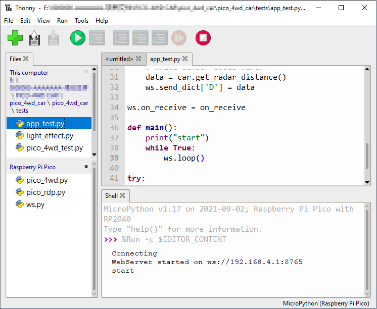
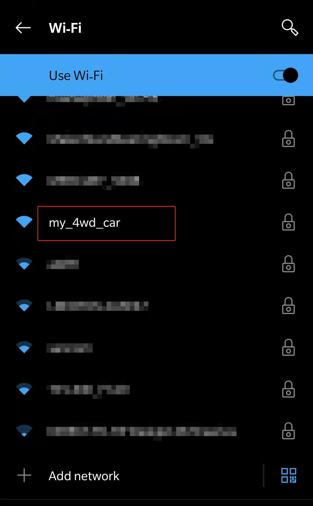
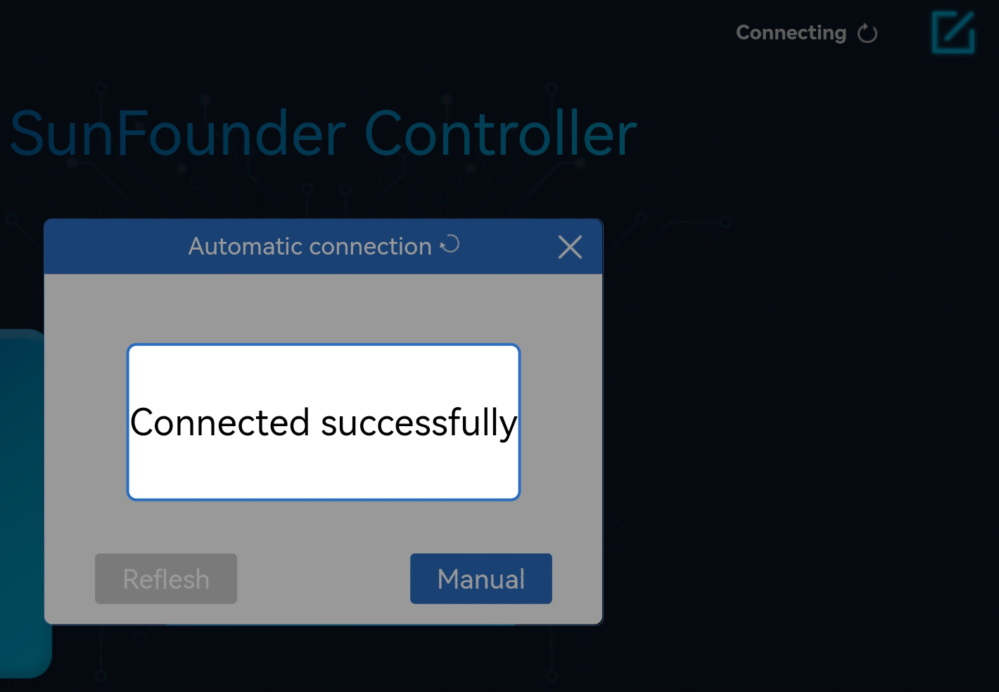
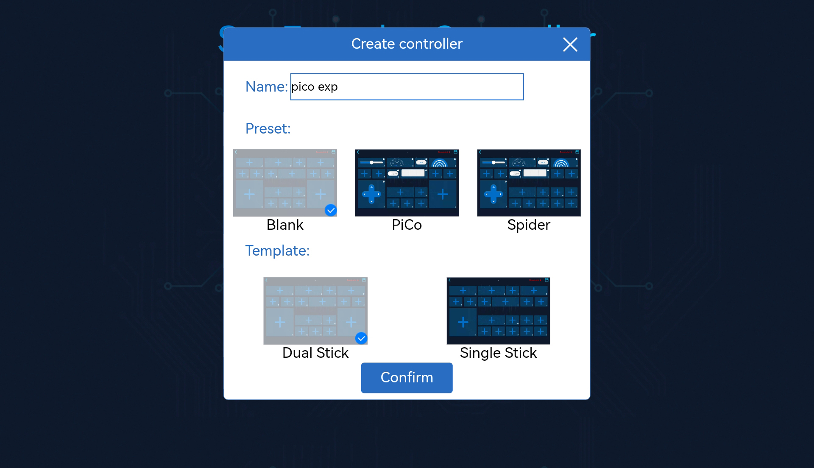
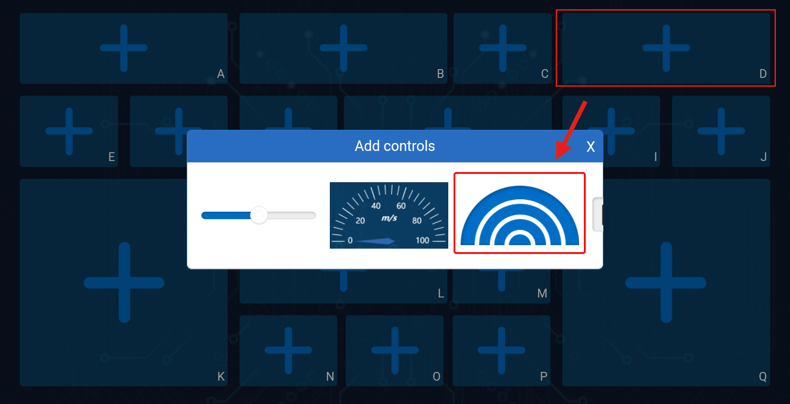
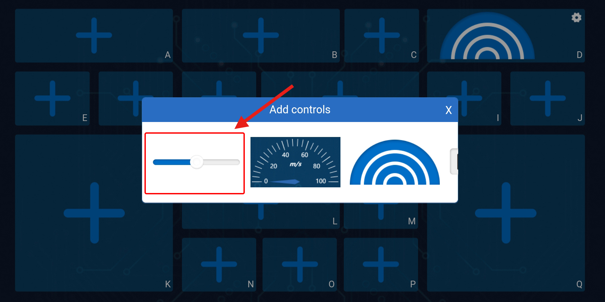
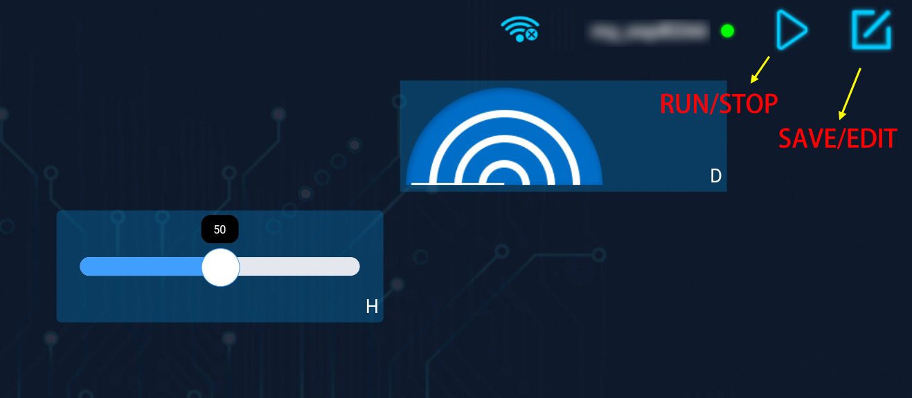

First-time Use the APP¶
This section will guide you to complete the communication between Sunfounder Controller APP and Pico, you can read the value of the potentiometer on the APP, and you can also control the LED on and off through the APP.
How to do?
Run
app_test.pyfile.Double click the
app_test.pyfile under thepico_4wd_car\testspath, then click “run current script” button or just press F5 to run it.After running the program, you will see the IP address and the “start” prompt in the Shell.

Connect to Pico 4WD car.
Find
my_4wd_caron the WLAN of the mobile phone (tablet), enter the password (12345678) and connect to it.
The default used in
app_test.pyis AP mode. So after you connect, there will be a prompt telling you that there is no Internet access on this WLAN network, please choose to continue connecting.
Connect to SunFounder Controller.
Now open SunFounder Controller and click Disconnected in the upper right corner.

Because it is AP mode, it will connect automatically here.
Note
If the connection has not been successful, please make sure the
app_test.pyfile is running properly and connect your device’s Wi-Fi tomy_4wd_car.
After the connection is successful, the Thonny script will show the IP of the newly connected device:
>>> %Run -c $EDITOR_CONTENT Connecting WebServer started on ws://192.168.4.1:8765 start Connected from 192.168.4.3Create a controller.
Click the + button in the middle of the page, then the Create controller page will pop up. Enter the name of the controller, select Blank -> Dual Stick and click Confirm.

You will be able to see boxes (some are rectangles, some are squares), we need to adjust them to apply to
app_test.py.Click on area D and select the radar scanning widget.

Click on area H and sclect the Slider widget.

Save and Run the controller.
Click the Save/Edit button and the controller will be saved. At the same time it enters the working state, and the empty widget box is hidden.
Then click the Run/Stop button to get this controller running！

You will be able to see that the Pico-4wd radar is scanning, and the D box on the Sunfounder Controller will show the scan results.
If you flip the slider of the H box, the RGB Board at the rear of the car will lights up the corresponding lights.
Note
If it does not work as expected, or if it shows disconnected, make sure that the
app_test.pyfile is running properly and that your mobile device’s Wi-Fi is connected to themy_4wd_car.
FAQ
Error during running code.
When the following error occurs, please check if the Pico 4WD car connection is stable.
Traceback (most recent call last): File "<stdin>", line 43, in <module> File "<stdin>", line 41, in main File "ws.py", line 115, in loop File "ws.py", line 46, in read UnicodeError:
Then hit Stop to stop running the code, and then run the code again.
Each time you re-run the code, you need to reconnect your device (phone/tablet) WIFI to
my_4wd_car, and then go to SunFounder Controller and click Disconnnected to reconnect.If the connection has not been successful, or suddenly disconnect.please make sure the
app_test.pyfile is running properly and your mobile device is connected tomy_4wd_car.